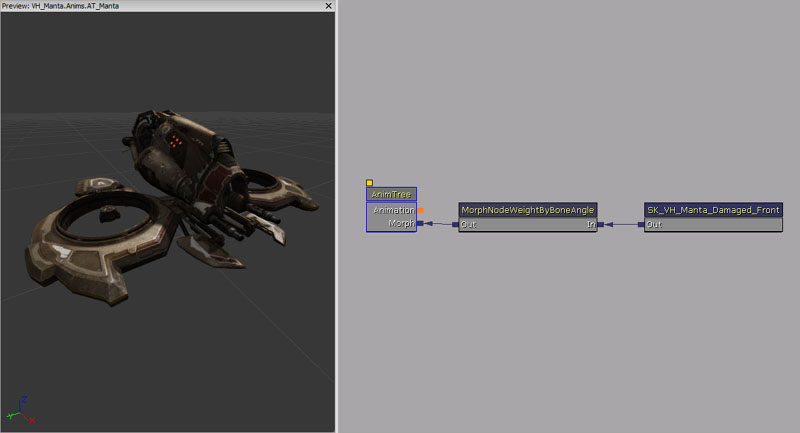
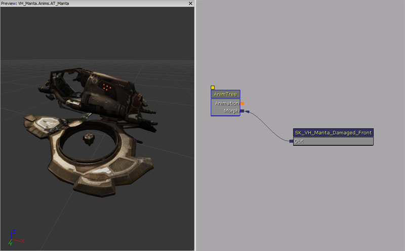
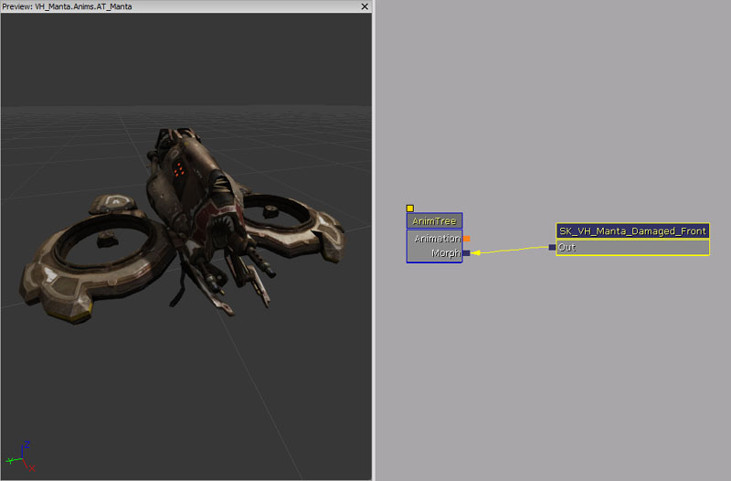

UDN
Search public documentation:
MorphTargetsCH
English Translation
日本語訳
한국어
Interested in the Unreal Engine?
Visit the Unreal Technology site.
Looking for jobs and company info?
Check out the Epic games site.
Questions about support via UDN?
Contact the UDN Staff
日本語訳
한국어
Interested in the Unreal Engine?
Visit the Unreal Technology site.
Looking for jobs and company info?
Check out the Epic games site.
Questions about support via UDN?
Contact the UDN Staff
顶点变形目标
概述
顶点变形目标是实时修改网格物体的一种方法，但是这种方法比基于骨骼的骨架动画具有更多的可控性。一个静态的顶点变形目标是一个在某些方面和现有网格物体稍有不同的网格物体版本。比如，您或许在您的3D建模程序中创建了一个角色的微笑版本，并把它作为‘smile（微笑）’顶点变形目标导入。然后在游戏中您可以应用这个顶点变形目标来修改脸部上的顶点，从而使您的人物产生微笑的效果，但是对每个顶点移动量的多少可以有很大的控制权。 虚幻引擎3中的顶点变形目标是以叠加的方式应用的。那意味着如果您有一个‘微笑’的顶点变形目标，仅嘴部的顶点进行了修改，而另一个是‘抬眉’的顶点变形目标，它仅影响眼部周围的顶点，同时应用这两个顶点变形目标将会同时出现微笑和眉部运动的效果。通过把多个顶点变形目标结合到一起，便允许您创建很多脸部姿势。除了处理速度和内存的限制外，在给定时间内骨架网格物体上可以激活的顶点变形目标的数量是没有限制的。 顶点变形目标可以和传统的动画协同工作。顶点变形目标在骨骼变化前被应用到骨架网格物体上。顶点变形目标应该基于网格物体的参考姿势进行创建，当导入顶点变形目标时，将它的顶点和基础网格物体的顶点相比较，然后仅存储这些不同的顶点。当使用顶点变形目标时，它仅修改基础网格物体顶点的一个子集，这样便降低了内存消耗。
导出及导入顶点变形目标
请参照使用FBX导出顶点变形目标页面获得关于如何使用FBX导出顶点变形目标的信息。 请参照使用FBX导入顶点变形目标 页面获得关于如何使用FBX导入顶点变形目标的信息。 如果骨架网格物体具有不止一个LOD层次，那么您也需要为每个LODs导入顶点变形目标。这可以通过在File(文件)菜单中的'Import MorphTarget LOD(导入顶点变性目标LOD)'选项。正如LOD0顶点变形目标必须从基础骨架网格物体的LOD0来生成一样，所以为了使顶点能够正确地匹配，每个新的顶点变形目标LOD层次必须从基础骨架网格物体的同样的LOD来产生。注意如果您的基础网格物体有不止一个LOD，但是没有为这些LODs设置相应的顶点变形目标LODs，那么当网格物体下降到较低的LOD时，将不会应用顶点变形目标。
顶点变形目标动画
您可以把具有Blend Shape（混合形状）的数据导入到FBX文件中，然后再将其导入为动画。您将需要MorphTargetSets(顶点变形目标集)来容纳动画所需要的顶点变形目标。它和Maya文件中的BlendCurve的名称相匹配。比如，如果您在Maya文件中将BlendCurve命名为"blink(眨眼)"，然后把它作为动画导出，MorphTargetSet(链接到SkeletalMeshComponent上的)应该包含"blink(眨眼)"，以便动画可以正常工作。 为了在动画集查看器中预览动画，可以添加适当的MorphTargetsets(变形目标集)到PreviewMorphTargetSets(预览顶点变性目标集)中。 在AnimTree(动画树)中，您现在可以在AnimNodeSequence使用那个动画，并且它将通过使用节点权重正规化变形目标权重来进行混合。
预览顶点变形目标
在顶点变形目标标签中，您将会看到一系列带着滑块的顶点变形目标。您可以使用任何顶点变性目标的滑块来改变权重。

重命名顶点变形目标
您可以在编辑框中重命名顶点变形目标，但是如果这个顶点变形目标已经应用于动画中，那么改变顶点变形目标的名称将会导致动画无效。 然而如果您正确地设置它，那么使用MorphNodePose(或者和MorphTarget(顶点变形目标)相关的节点)应该可以正常工作。
删除顶点变形目标
首先选择要删除的顶点变形目标，然后您可以在菜单中使用Delete Morph Targets(删除顶点变形目标)来删除它。 您可以使用Select All (选择所有)来选择所有顶点变形目标或者取消选择所有的顶点变形目标。
更新顶点变形目标
如果基础网格物体已经被修改(也就是：影响点改变)，当您打开顶点变形目标查看器时，它将会提示允许重新映射。如果顶点变形目标(和前一个网格物体)映射错误，那么这将不能工作。您也可以使用Morph Target Set(顶点变形目标集)中的Update Morph Target(更新顶点变形目标)菜单。
控制顶点变形目标
您可以使用通过FaceFX、在Matinee或者在代码中控制顶点变形。
添加顶点变形目标到动画树
 为了一次把多个顶点变形目标混合到一起，您可以使用一个AnimTree。在动画树编辑器中，您将看到一个到标签为 Morph(顶点变形) 的根"Animations(动画节点)"的输入端。这输入端是为了连接各种类型的顶点变形节点而设计的。有两种主要类型的顶点变形节点：
为了一次把多个顶点变形目标混合到一起，您可以使用一个AnimTree。在动画树编辑器中，您将看到一个到标签为 Morph(顶点变形) 的根"Animations(动画节点)"的输入端。这输入端是为了连接各种类型的顶点变形节点而设计的。有两种主要类型的顶点变形节点：
- (顶点变形姿势) - 这是一个来自MorphTargetSet(顶点变形目标集)的静态顶点变形目标。
- Morph Weight（顶点变形权重） - 这个节点用于控制它的子节点所应用的"strength(强度)"。这种类型的节点在它的上面有一个滑块，允许您在编辑器中修改权重并可以查看结果。
在Matinee中使用顶点变形目标
要想在 Matinee中使用顶点变形...- 使用经过MorphNodeWeight进入到顶点变形轨迹的MorphPoses(顶点变形姿势)制作一个动画树。
- 赋予MorphNodeWeight一个NodeName(节点名称)，这是您在Matinee中要使用该名称来驱动该节点。
- 为了在动画树查看器中看到顶点变形，请选择动画树，并设置PreviewSkelMesh和PreviewMorphSets。
- 通过右击选择add actor/add SkeletalMeshMAT(添加actor/添加SkeletalMeshMAT来把骨架网格物体添加到世界中，这样便允许骨架网格物体使用动画树了。
- 选择网格物体，在它的属性中跳转到SkeletalMeshactpr/SkeletalMeshComponent/SkeletalMeshComponent，并设置AnimTreeTemplate和MorphSets为您先前创建的那个。
- 创建一个Matinee，并为您的网格物体添加一个NewSkeletalMeshGroup，右击它并添加一个Morph Weight(顶点变形权重)。选择该顶点变形权重，并在属性中把动画树中的MorphNodeWeight(顶点变形节点权重)的NodeName(节点名称)添加到MorphNodeName(顶点变形节点名称)部分。现在您可以添加关键帧，使它像其它任何Matinee轨迹一样来产生动画。您可以同时又多个MorphWeight(顶点变形权重)轨迹，然后把它们混合到一起。为了顶点变形序列产生动画，当您打开另一个顶点时是必须关闭一个顶点。
在Unrealscript中使用顶点变形目标
您可以使用脚本来修改游戏中的脚本变形目标的权重。要想完成这个处理，您首先必须在动画树编辑器中设置Morph Node的'NodeName'属性。然后您可以使用SkeletalMeshComponent中的'FindMorphNode'功能来按名称查找节点，然后调用SetNodeWeight函数来改变节点的权重。这里是个示例：
var MorphNodeWeight WeightNode;
simulated event PostInitAnimTree(SkeletalMeshComponent SkelComp)
{
Super.PostInitAnimTree(SkelComp);
if (SkelComp == Mesh)
{
WeightNode = MorphNodeWeight(Mesh.FindMorphNode('MyNode'));
if(WeightNode != None)
{
WeightNode.SetNodeWeight(NewWeight);
}
}
}
simulated function Destroyed()
{
Super.Destroyed();
WeightNode = None;
}
顶点变形目标节点引用
权重顶点变形节点
这个顶点变形节点允许您动态地调整所附加的所有顶点变形姿势的权重。

属性
- Node Name（节点名称） - 节点的名称，使得Unrealscript可以找到这个顶点变形节点。
UnrealScript 函数
- SetNodeWeight(float NewWeight) -设置节点的权重。
- NewWeight - 要设置为的新权重。
按骨骼角度设置顶点变形节点权重
这个顶点变形节点获得两个骨骼间的最小角度(0到180度)，并使用已使用的定义的值将该角度变换为缩放顶点变形目标的权重。该材质参数可以用于自动地调整材质参数和这个顶点变形节点。

属性
- Base Bone Name(基础骨骼名称) - 基础骨骼名称。
- Base Bone Axis(基础骨骼轴) - 基础骨骼要使用的轴， X、 Y或Z。
- Invert Base Bone Axis(反转基础骨骼轴) - 如果该项为true，那么则反转该基础骨骼轴。
- Angle Bone Name(角度骨骼名称) - 角度骨骼名称。
- Angle Bone Axis(角度骨骼周) - 角度骨骼上要使用的轴，X、Y或Z。
- Invert Angle Bone Axis(反转角度骨骼轴) - 如果该项为true，则反转角度骨骼轴。
- Control Material Parameter(控制材质参数) - 如果该项为true，那么该顶点变形节点也控制一个材质参数。
- Material Slot Id(材质插槽Id) - 要控制的骨架网格物体上的材质插槽。
- Scalar Parameter Name(标量参数名称) - 要控制的材质标量参数名称。
- Weight Array(权重数组) - 在不同角度要使用的权重的数组。
- Angle(角度) - 应用到这个权重的角度。
- Weight(权重) - 要应用的权重。
按骨骼旋转度设置顶点变形节点权重
这个节点对应着骨骼相对于参考骨架的旋转度，使用已用的已定义值来设置缩放顶点变形目标的权重。

属性
- Base Bone Name(基础骨骼名称) - 基础骨骼名称。
- Base Bone Axis(基础骨骼轴) - 基础骨骼要使用的轴， X、 Y或Z。
- Invert Base Bone Axis(反转基础骨骼轴) - 如果该项为true，那么则反转该基础骨骼轴。
- Weight Array(权重数组) - 在不同角度要使用的权重的数组。
- Angle(角度) - 应用到这个权重的角度。
- Weight(权重) - 要应用的权重。
- Control Material Parameter(控制材质参数) - 如果该项为true，那么该顶点变形节点也控制一个材质参数。
- Material Slot Id(材质插槽Id) - 要控制的骨架网格物体上的材质插槽。
- Scalar Parameter Name(标量参数名称) - 要控制的材质标量参数名称。
多姿势顶点变形节点
这个顶点变形节点应用存储在顶点变形目标组中的多个顶点变形目标。您也可以通过调整数组中存储的权重值来调整这个顶点变形节点针对每个顶点变形目标所应用的总权重。

属性
- Morph Names(顶点变形名称) - 要应用的顶点变形目标的名称。
- Weights(权重) - 针对每个顶点变形目标要应用的权重。
- Node Name（节点名称） - 节点的名称，使得Unrealscript可以找到这个顶点变形节点。
UnrealScript 函数
- AddMorphTarget(Name MorphTargetName, optional float InWeight = 1.0f) - 通过名称添加这个MorphNodeMultiPose节点要使用的MorphTarget(顶点变形目标)。将会使用FindMorphTarget在所拥有的SkeletalMeshComponent 顶点变形目标数组中查找该顶点变形目标。如果已经添加了该顶点变形目标则返回true。
- MorphTargetName(顶点变形目标名称) - 要添加的顶点变形目标的名称。
- InWeight - 这个顶点变形目标要设置的权重。
- RemoveMorphTarget(Name MorphTargetName) - 按名称从这个MorphNodeMultiPose中删除该顶点变形目标。
- MorphTargetName - 要删除的顶点变形目标的名称。
- UpdateMorphTarget(MorphTarget Target, float InWeight) - 更新顶点变形目标的权重。
- Target - 要修改其权重的顶点变形目标。
- InWeight - 要将这个顶点变形目标设置为的新权重。
姿势顶点变形节点
这个节点应用顶点变形目标组中存储的顶点变形目标。您也可以通过调整权重值来调整这个顶点变形节点所应用的总权重。

属性
- Morph Names(顶点变形名称) - 要应用的顶点变形目标的名称。
- Weight(权重) - 要应用的总权重。
- Node Name（节点名称） - 节点的名称，使得Unrealscript可以找到这个顶点变形节点。
UnrealScript 函数
- SetMorphTarget(Name MorphTargetName) - 设置顶点变形目标。
- MorphTargetName - 要设置的顶点变形目标的名称。